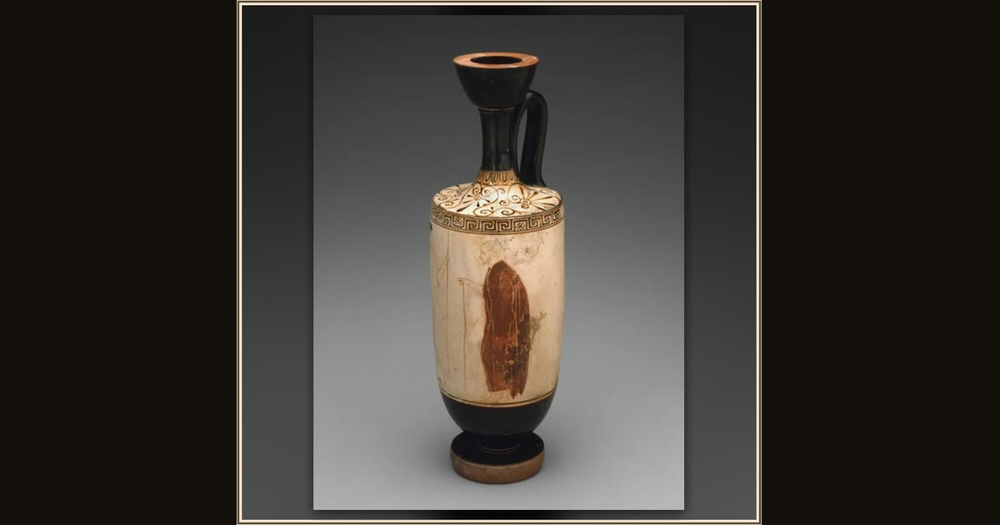

Lekythos (Oil Jar)
Attributed to the Achilles Painter, Greek; Athens · 445-440 BCE · The Art Institute of Chicago · Chicago, USA
Book 24 opens among the dead, as Hermes leads the suitors’ souls down to the meadow of shadows. Athenians painted slender oil-jars like this one for the grave; here a young man with a spear turns back for a last look at an old man leaning on his stick, a farew